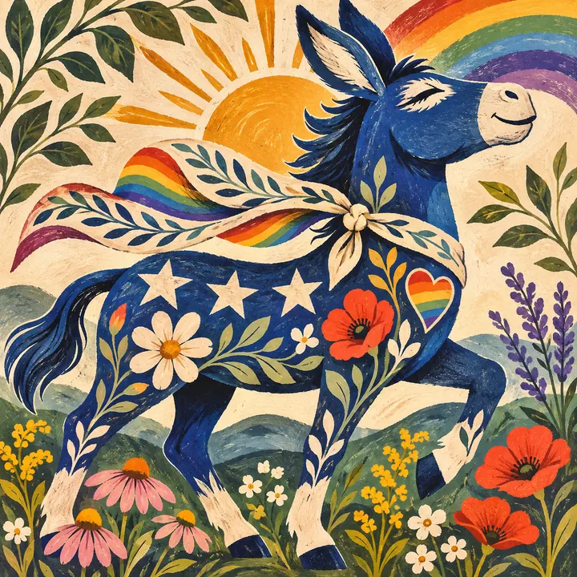

▦
UNITED STATES
218 TO WINHOUSE
DEMOCRATIC—
REPUBLICAN—
Waiting for called-seat totals • 435 seats
Your college spreadsheet got a glow-up. Make your picks, check the calls, and see who can read the electoral tea leaves.
Your saved picks are safe on this phone. Connect both phones to the same private board to compare scores.
Totals are manually entered, not a live results feed. They are separate from the featured-race prediction game.
Waiting for called-seat totals • 435 seats
Waiting for called-seat totals • 50–50 ties go to the vice president
Counts reflect only called winners manually entered for the 36 gubernatorial races on this board, not overall control of all 50 governorships.

Community leaderboard appears when your challenge is connected.
Progress counts the 124 tracked races in this app, not all 435 House districts nationwide.
Candidate rosters and incumbency are compiled snapshots, not live updates. An incumbent may be retiring or absent from the ballot. Verify state election records for late changes.
Ordered by when the last polls close, shown in Central Standard Time. Pick the winner when the race is reliably called; polling close does not mean a winner has been declared. Both Parker and Blake can enter calls on a private shared board.
Source: 270toWin 2026 poll closing times. Districts crossing time zones are ordered by their final closing time.